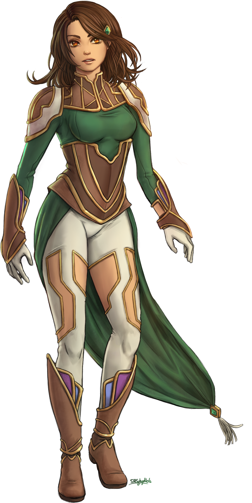
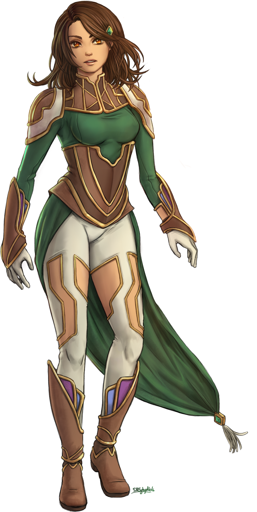

Wentea Kuies
name: Wentea Kuies
age: 23
date of birth: secret
hair color: dark brown
hair style: medium long
skin tone: tan with light freckles
eye color: gold
height: 6 ft
ethnicity/race: Latina
citizenship: Sege Amant
faction: Starlite 7th
key attribute: cool
left-handed
body type: tall slim
Character Bio/Personality:
To meet Wentea is to come away with the perception of a cool collected person, but that's a huge facade.
In truth, she's a bit of a space cadet and even more aloof than Kayre and Jí Lián.
Wentea is internationally known, having found a successful career as a fashion model. She also has a clothing line.
For someone so well known and widely regarded, precious little is known about her save these scant facts:
Wentea is originally from the Tribal Lands of Vagor, where her family still lives and she's been out of touch with them for a number of years.
There are rumors that Wentea isn't even her real name.